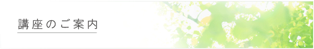
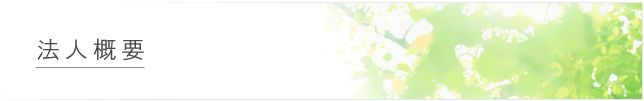

ニュース
行事予定
TOP > 講座のご案内

歎異抄講座
| 担当 | 松田 正典 |
|---|
坐禅会
| 担当 | 岡本 貞雄 |
|---|
読書会座
| 担当 | 松田 正典・永田 純一 |
|---|
こども会錬成会
| 担当 | 永田純一 |
|---|

第１章 総 則
（名 称）
| 第１条 | この法人は、一般財団法人広島大学仏教青年会という。 |
（事務所）
| 第２条 | この法人は、主たる事務所を東広島市西条町田口３８９４－１（広島大学仏教青年会館）に置く。 |
| ２ | この法人は、理事会の決議によって従たる事務所を必要な地に置くことができる。 |
第２章 目的及び事業
（目 的）
| 第３条 | この法人は、広島大学の学生ならびに地域青少年に仏教精神の自覚と振興を図り、地域住民との活発な交流によって地域の精神文化の向上と生活の充実に資することを目的とする。 |
（事 業）
| 第４条 | この法人は、前条の目的を達成するために、次の事業を行う。 |
| （１） | 仏教講演会の開催 |
| （２） | 仏典講話会、談話会、座禅会等の開催 |
| （３） | 地域青少年の修養指導催 |
| （４） | 地域住民との仏教を中心とする交流行事及び各種ボランティア活動 |
| （５） | 学術図書の刊行 |
| （６） | 機関誌の発行 |
| （７） | 付属図書館の運営 |
| （８） | その他、目的を達成するために必要な事業 |
第３ 資産及び会計
（基本財産）
| 第５条 | この法人の目的である事業を行うために不可欠な財産は、この法人の基本財産とする。 |
| ２ | 基本財産は、この法人の目的を達成するために善良な管理者の注意をもって管理しなければならず、基本財産の一部を処分しようとするとき及び基本財産から除外しようとするときは、あらかじめ理事会及び評議員会の承認を得なければならない。 |
（事業年度）
| 第６条 | この法人の事業年度は、毎年４月１日から翌年３月３１日までとする。 |
（事業計画及び予算）
| 第７条 | この法人の事業計画書及び収支予算書は、理事長が作成し、毎事業年度開始前に、理事会及び評議員会の承認を受けなければならない。これを変更する場合も同様とする。 |
（事業報告及び決算）
| 第８条 | 事業報告及び決算については、毎事業年度終了後、理事長が次の書類を作成し、監事の監査を受けた上で、理事会の承認を経て、定時評議員会に提出し、第1 号及び第2号の書類についてはその内容を報告し、第3 号から第5 号までの書類については承認を受けなければならない。 |
| （１） | 事業報告 |
| （２） | 事業報告の附属明細書 |
| （３） | 貸借対照表 |
| （４） | 損益計算書（正味財産増減計算書） |
| （５） | 貸借対照表及び損益計算書（正味財産増減計算書）の附属明細書 |
| ２ | 前項の書類のほか、監査報告を主たる事務所に5 年間備え置くとともに、定款を主たる事務所に備え置くものとする。 |
第４章 評議員
（評議員）
| 第９条 | この法人に、評議員３名以上１０名以内を置く。 |
（評議員の選任及び解任）
| 第１０条 | 評議員の選任及び解任は、評議員会の決議をもって行う。 |
（任 期）
| 第１１条 | 評議員の任期は、選任後６年以内に終了する事業年度のうち最終のものに関する定時評議員会の終結の時までとする。 |
| ２ | 任期満了前に退任した評議員の補欠として選任された評議員の任期は、退任した評議員の任期の満了時までとする。 |
| ３ | 第９条に定める評議員の員数が欠けた場合には、任期の満了又は辞任により退任した評議員は、新たに選任された者が就任するまで、なお評議員としての権利義務を有する。 |
（評議員に対する報酬）
| 第１２条 | 評議員に対しての報酬は、各年度の総額が５万円を越えない範囲で、評議員会において別に定める報酬等の支給の基準に従って算定した額を、報酬として支給する。 |
第５章 評議員会
（構 成）
| 第１３条 | 評議員会は、すべての評議員をもって構成する。 |
（権 限）
| 第１４条 | 評議員会は、次の事項について決議する。 |
| （１） | 理事及び監事の選任又は解任 |
| （２） | 理事及び監事の報酬等の額 |
| （３） | 評議員に対する報酬等の支給の基準 |
| （４） | 貸借対照表及び損益計算書（正味財産増減計算書）並びにこれらの附属明細書の承認 |
| （５） | 定款の変更 |
| （６） | 残余財産の処分 |
| （７） | 基本財産の処分又は除外の承認 |
| （８） | その他評議員会で決議するものとして法令又はこの定款で定められた事項 |
（開 催）
| 第１５条 | この法人の評議員会は、定時評議員会及び臨時評議員会とする。定時評議員会は、毎事業年度の終了後３か月以内に開催し、臨時評議員会は、必要に応じて開催する。 |
（招 集）
| 第１６条 | 評議員会は、法令に別段の定めがある場合を除き、理事会の決議に基づき理事長が招集する。 |
| ２ | 評議員は、評議員会の目的である事項及び招集の理由を示して、評議員会の招集を請求することができる。 |
（決 議）
| 第１７条 | 評議員会の決議は、評議員（決議について特別の利害関係を有する評議員を除く。）の過半数が出席し、その過半数をもって行う。 |
| ２ | 前項の規定にかかわらず、次の決議は、評議員（決議について特別の利害関係を有する評議員を除く。）の３分の２以上に当たる多数をもって行う。 |
| （１） | 監事の解任 |
| （２） | 評議員に対する報酬等の支給の基準 |
| （３） | 定款の変更 |
| （４） | 基本財産の処分又は除外の承認 |
| （５） | その他法令で定められた事項 |
| ３ | 理事又は監事を選任する議案を決議する場合には、候補者ごとに第1 項の決議を行わなければならない。理事又は監事の候補者の合計数が第19 条に定める定数を上回るときは、過半数の賛成を得た候補者の中から得票数の多い順に定数の枠に達するまでの者を選任する。 |
| ４ | 理事が評議員会の目的である事項について提案をした場合において、その提案につき評議員（当該事項について議決に加わることができるものに限る。）全員が書面又は電磁的記録により同意の意思表示をしたときは、当該提案を可決する旨の評議員会の決議があったものとみなす。 |
（議事録）
| 第１８条 | 評議員会の議事については、法令で定めるところにより議事録を作成し、出席した評議員及び理事のうちから選出した議事録署名人２名がこれに記名押印するものとする。 |
第６章 役 員
（役 員）
| 第１９条 | この法人に、次の役員を置く。 |
| （１） | 理事 ７名以上１２名以内 |
| （２） | 監事 １名以上２名以内 |
| ２ | 理事のうち、１名を理事長とする。 |
| ３ | 前項の理事長をもって、一般社団法人及び一般財団法人に関する法律上の代表理事とする。 |
（役員の選任）
| 第２０条 | 理事及び監事は、評議員会の決議によって選任する。 |
| ２ | 理事長は、理事会の決議によって理事の中から選定する。 |
（理事の職務）
| 第２１条 | 理事は、理事会を構成し、法令及びこの定款で定めるところにより、この法人の職務を遂行する。 |
| ２ | 理事長は、この法人を代表し、この法人の業務を執行する。 |
| ３ | 理事長は、毎事業年度に４か月を超える間隔で２回以上、自己の職務の執行の状況を理事会に報告しなければならない。 |
（監事の職務）
| 第２２条 | 監事は、理事の職務の執行を監査し、法令で定めるところにより、監査報告を作成する。 |
| ２ | 監事は、いつでも、理事及び使用人に対して事業の報告を求め、この法人の業務及び財産の状況の調査をすることができる。 |
（役員の任期）
| 第２３条 | 理事の任期は、選任後２年以内に終了する事業年度のうち最終のものに関する定時評議員会の終結の時までとする。 |
| ２ | 監事の任期は、選任後４年以内に終了する事業年度のうち最終のものに関する定時評議員会の終結の時までとする。 |
| ３ | 補欠として選任された理事又は監事の任期は、前任者の残任期間とする。 |
| ４ | 理事又は監事は、第19 条に定める定数に足りなくなるときは、辞任又は任期満了後においても、新たに選任された者が就任するまで、なお理事又は監事としての権利義務を有する。 |
（役員の解任）
| 第２４条 | 理事及び監事が次のいずれかに該当するときは、評議員会の決議によって解任することができる。 |
| （１） | 職務上の義務に違反し、又は職務を怠ったとき。 |
| （２） | 心身の故障のため、職務の執行に支障があり、又はこれに堪えないとき。 |
（報酬等）
| 第２５条 | 理事及び監事に対して、評議員会において別に定める総額の範囲内で、評議員会において別に定める報酬等の支給の基準に従って算定した額を、報酬等として支給することができる。 |
（役員の損害賠償責任の免除）
| 第２６条 | この法人は、一般社団法人及び一般財団法人に関する法律第198 条において準用する同法第114 条第1 項の規定により、理事又は監事が任務を怠ったことによる損害賠償責任を、法令に規定する額を限度として理事会の決議により免除することができる。 |
（外部役員の責任限定契約）
| 第２７条 | この法人は、一般社団法人及び一般財団法人に関する法律第198 条において準用する同法第115 条第1 項の規定により、外部理事又は外部監事との間に、任務を怠ったことによる損害賠償責任の限定契約を締結することができる。なお、責任の限度額は、一般社団法人及び一般財団法人に関する法律第198 条において準用する同法第113 条第1 項の規定による最低責任限度額とする。 |
第７章 理事会
（構 成）
| 第２８条 | この法人に、理事会を置く。 |
| ２ | 理事会は、すべての理事で構成する。 |
（権 限）
| 第２９条 | 理事会は、次に掲げる職務を行う。 |
| （１） | この法人の業務執行の決定 |
| （２） | 理事の職務の執行の監督 |
| （３） | 理事長の選定及び解職 |
（招 集）
| 第３０条 | 理事会は、理事長が招集する。 |
| ２ | 理事長に支障があるときは、あらかじめ定めた順序により、他の理事が理事会を招集する。 |
| ３ | 理事会を招集するときは、理事会の日時、場所、目的である事項を記載した書面をもって、理事会の日の１週間前までに、各理事及び各監事に対してその通知を発しなければならな い。 |
| ４ | 前項の規定にかかわらず、理事及び監事の全員の同意があるときは、招集の手続を経ることなく理事会を開催することができる。 |
（議 長）
| 第３１条 | 理事会の議長は、理事長とする。 |
| ２ | 理事長に支障があるときは、あらかじめ定めた順序により、他の理事が議長となる。 |
（決 議）
| 第３２条 | 理事会の決議は、決議について特別の利害関係を有する理事を除く理事の過半数が出席し、その過半数をもって行う。 |
| ２ | 前項の規定にかかわらず、一般社団法人及び一般財団法人に関する法律第197 条において準用する同法第96 条の要件を満たしたときは、理事会の決議があったものとみなす。 |
（議事録）
| 第３３条 | 理事会の議事については、法令で定めるところにより、議事録を作成する。 |
| ２ | 出席した理事長及び監事は、前項の議事録に署名し、又は記名押印する。 |
第８章 定款の変更及び解散
（定款の変更）
| 第３４条 | この法人は、評議員会の決議によって定款を変更することができる。 |
| ２ | 前項の規定は、この定款の第３条、第４条及び第10 条についても適用する。 |
（解 散）
| 第３５条 | この法人は、基本財産の滅失によるこの法人の目的である事業の成功の不能その他法令で定められた事由によって解散する。 |
第９章 公告の方法
（公告の方法）
| 第３６条 | この法人の公告方法は、主たる事務所の公衆の見やすい場所に掲示する方法とする。 |
第１０章 事務局
（事務局）
| 第３７条 | この法人に事務局を置く。事務局の組織及び運営に関して必要な事項は理事会で定める。 |
第１１章 雑 則
（委 任）
| 第３８条 | この定款に定めるもののほか、この法人の運営に必要な事項は、理事会の議決を経て、理事長が別に定める。 |